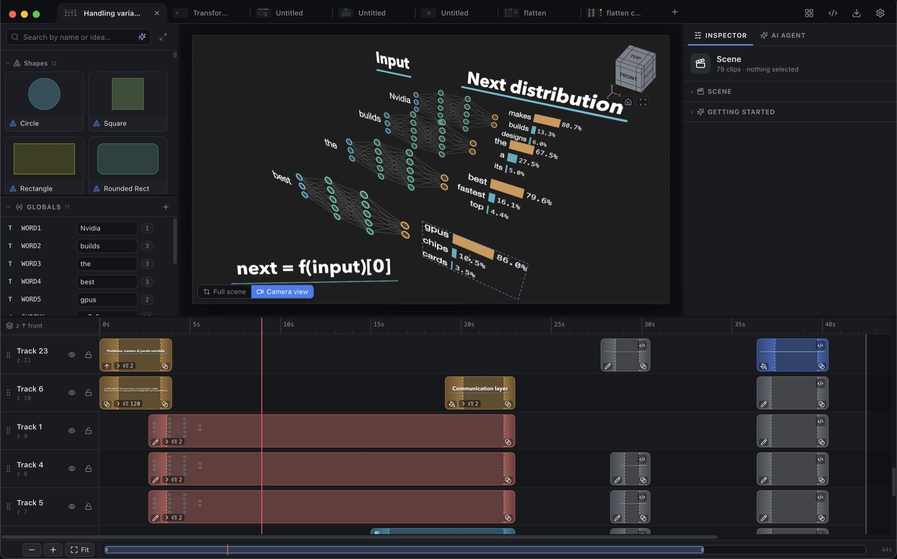

macOS
Apple Silicon (M1 and later)
ManimUI-arm64.dmg
- Signed and notarized — open the .dmg and drag ManimUI to Applications.
- Updates itself from Settings → Updates.
- For
Texmobjects, install a LaTeX distribution (e.g. MacTeX).
Drag mobjects onto a live preview, arrange them on a video-editor timeline, and export with manimgl. Everything you do becomes a real ManimGL script you can see and edit.

Tracks, clips and keyframes, like a video editor — layered and scrubbable.
The real ManimGL engine renders as you edit, in 2D or a free 3D camera.
Describe a scene and let the agent build or edit it. Bring your own OpenRouter key.
Every change is a plain ManimGL script — read it, edit it, export it.
The latest release for every platform. Python, ManimGL and ffmpeg are bundled — nothing else to install.
Tex mobjects, install a LaTeX distribution (e.g. MacTeX).Tex mobjects, install MiKTeX.chmod +x ManimUI-x86_64.AppImage then run it (needs libfuse2). Updates itself.sudo apt install ./ManimUI-amd64.deb, then start ManimUI from the menu.Tex mobjects: sudo apt install texlive-latex-extra texlive-science dvisvgm